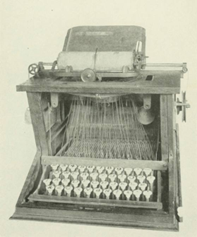
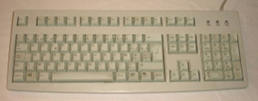
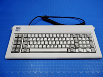
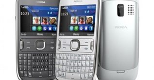
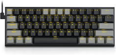

Geschiedenis tijdlijn in het kort.
1878:
De QWERTY-toetsenbordindeling werd gepatenteerd door Christopher Latham Sholes (uitvinder van de typmachine). Dit was een ander ontwerp, omdat de draden van de letters in andere volgorde in de knoei kwam. Dit werd door de nieuwe lay-out voorkomen.
Jaren 70:
Een precies jaartal is niet bekend, maar in de jaren 70 verscheen het eerste computertoetsenbord, loodzwaar en niet te betalen.
1981:
IBM introduceert het eerste losse toetsenbord op de markt. Het wordt het 83-toetsenbord genoemd. Het heet zo omdat het 83 toetsen heeft.
2007:
Apple brengt de eerste smartphone uit zonder fysiek toetsenbord.
2015:
Het eerste toetsenbord wordt geïntroduceerd speciaal ontwikkeld voor gaming.
Geschiedenischiedenis tijdlijn uitegbreid.
1878-Eerste toetsenbord indeling en waarom:
Het eerste toetsenbord ooit gemaakt was de QWERTY-indeling. Het werd ontwikkeld door Christopher Sholes in 1868 en is gebaseerd op de mechanische Remington-typemachine. Het originele toetsenbord had 60 sleutels, waarvan er slechts 48 werden gebruikt. De andere 12 sleutels werden gebruikt voor speciale functies zoals schakelen tussen lettertypen. De indeling van het toetsenbord was bedoeld om de gebruikers te helpen bij het typen door de meest gebruikte lettercombinaties te verdelen over het toetsenbord. Dit gebeurde door de letters op te splitsen in twee blokken, de linker- en rechterhand van de gebruiker. De gebruiker kon dan een snellere typetijd behalen. De QWERTY-indeling wordt nog steeds gebruikt op de meeste toetsenborden en is nu een standaardindeling voor toetsenborden.

1878
Jaren 70-Eerste (echte) toetsenbord:
In de jaren 70 werd er iets nieuws toegevoegd aan de markt: de display. Met deze gloednieuwe toevoeging kon men voortaan zien wat ze typten, in plaats van dat ze eerst alles moesten typen op hun typmachine en naderhand pas zagen wat er op het papier stond. Bij deze computer zat een "toetsenblok". Dit toetsenblok was ontzettend zwaar. Op dit toetsenblok zaten standaard knoppen die we nu nog steeds gebruiken. Niet alleen de letters stonden erop, maar ook nummers, de spatiebalk, de entertoets en een extra rij met nummers aan de rechterkant van het toetsenblok. De toetsenborden die vandaag de dag geproduceerd worden lijken hier enorm op. Het feit is wel dat er nu extra knopjes op zitten als caps Lock, escape en ALT.

jaren 70
1981-Eerste losse toetsenbord:
In 1981 werd het losse toetsenbord uitgevonden. Deze was een heel stuk lichter, en kon gemakkelijk losgekoppeld en aangekoppeld worden aan de hoofd pc. Door deze nieuwe uitvinding, werden toetsenborden in allerlei kleuren en uitvoeringen uitgebracht. Het toetsenbord was voor velen een super uitvinding, omdat mensen altijd moeite hadden met het gewicht van het eerste toetsenbord. Tegenwoordig moet je toetsenborden in een pc pluggen door middel van een usb-kabel. Daardoor gaat het nog een heel stuk sneller dan het vroeger ging.

1981
2007-Eerste telefoon zonder toetsenbord:
In 2007 bracht Apple de eerste telefoon uit zonder een fysiek toetsenbord. Dit hield in dat mensen die de telefoon kochten, voortaan op een scherm moesten typen in plaats van op echte knopjes om hun berichten te versturen. Voor iedereen die de telefoon kocht was dit uiteraard heel erg wennen. Velen ruilden daarom bijna direct na aankoop hun gloednieuwe Apple in voor hun oude telefoons die wél een fysiek toetsenbord hadden. Tegenwoordig is een digitaal toetsenbord natuurlijk niet meer weg te denken.

2007
2015-Het eerste gaming toetsenbord:
In 2015 wordt het eerste toetsenbord speciaal bestemd voor gaming op de markt gebracht. Dit toetsenbord is grotendeels anders dan het toetsenbord wat de meeste mensen gebruiken. Zo zijn sommige letters op het toetsenbord een andere kleur dan andere letters. Dit komt doordat bepaalde knoppen vaker gebruikt worden dan andere tijdens het gamen. Daarnaast is het gaming toetsenbord een heel stuk kleiner om zo snel bij alle knoppen te kunnen komen. Misschien is het wel eens opgevallen dat sommige (professionele) gamers hun toetsenbord bijna helemaal schuin neerzetten. Dit doen ze zodat ze op deze manier nóg sneller bij de toetsen kunnen komen.

2015